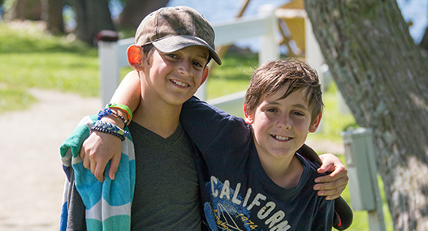

<link rel="import" href="../../style/main-style.html">
<link rel="import" href="../../bower_components/polymer/polymer.html">
<link rel="import" href="../toth-header/toth-header.html">
<link rel="import" href="../toth-splash/toth-splash.html">
<link rel="import" href="../toth-footer/toth-footer.html">

<dom-module id="toth-site">
	<template>
		<style include="main-style">
			#stream {
				background-image: url('img/orange-dots.jpg');
				width: 100%;
				min-height: 500px;
			}

			#stream h1 {
				background-color: #fff;
				color: var(--toth-orange);
				text-transform: uppercase;
				padding: 5px 100px;
			}

			.cta-info {
				font-size: 38px;
				text-align: center;
				font-weight: 600;
				margin-bottom: 29px;
			}

			#campkids img {
				box-shadow: 4px 4px 4px #ccc;
				border: 1px solid #000;
			}
		</style>

		<toth-header></toth-header>
		<toth-totaltrack></toth-totaltrack>
		<toth-splash></toth-splash>

		<section id="intro">
			<h1>Say, what *is* Tip of the Hats?</h1>
			<div id="campkids">
				
			</div>
			<div id="campabout">
				<p>
					Tip of the Hats is a charity event hosted and supported by members of the TF2 community. Since 2013, it
					has raised over $450,000 for Children's Oncology Services, Inc., which offers camps and other
					educational and excursion programs throughout the year that allow children with cancer to just be kids.
					With your help, COSI can offer attendance to kids at little to no cost to their families.
				</p>
			</div>
		</section>

		<section id="stream">
			<h1>Stream Highlights</h1>
		</section>

		<section id="cta">
			<h1>TUNE IN AND SUPPORT TOTH</h1>
			<span class="cta-info">Stream starts September 16th @ 11 AM CST</span>
		</section>

		<toth-footer></toth-footer>
	</template>

	<script src="toth-site.js"></script>
</dom-module>
